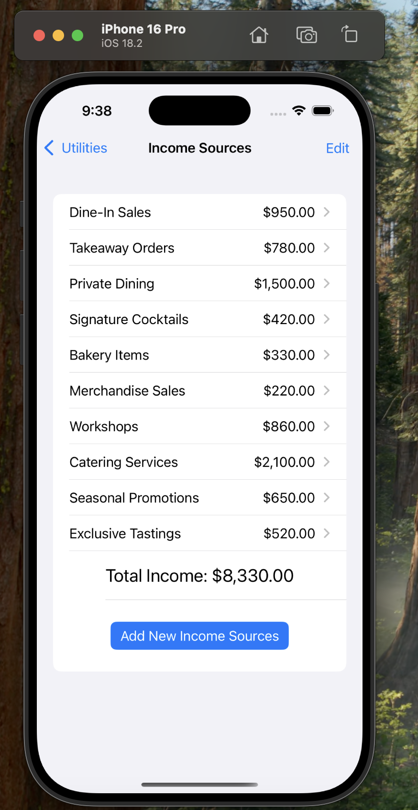

This mobile application,
Bhavitha's Feast Factory, is a restaurant finance management app designed to help restaurant owners track income and expenses across various business activities. It offers a user-friendly dashboard with real-time profit visualization, easy access to income and expense entries, and tools to analyze financial health.
With sections like Income Sources and Expense Categories, users can:
- Add, edit, and view multiple streams like dine-in, takeaway, private dining, etc.
- Manage detailed expenses such as salaries, utilities, rent, marketing, etc.
- Automatically calculate and display total income, total expenses, and profit percentage.
- Use a clean iOS interface that ensures easy navigation and a responsive experience.
This application is ideal for small restaurant owners aiming to streamline their financial monitoring with a clean and efficient mobile interface.
Project Screenshots
